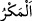

Bu ifade, kinâye yoluyla lâzımı nefyederek melzûmu (bir şeyin îcâbı olanı) da
nefyetmektedir. Yani Allah’ın ne ortağı, ne de bu ortakla ilgili bilgisi vardır. Çünkü eğer
ortağı olsaydı, Allah tarafından biliniyor olması gerekirdi. Çünkü Allah’ın bilmesi bir
şeyin var oluşunun lâzımıdır, zorunlu şartıdır. Aksi durum Allah’ın onun hakkında
bilgisiz olmasını gerektirir. Bu bakımdan onun var olduğu Allah tarafından
bilinmediğine göre onun var olmaması zorunludur. Çünkü lâzımın olmaması
melzûmunun da olmamasını gerektirir.
Bahru’l-ulûm’da şöyle der: “Yoksa siz Allah’a… mı haber veriyorsunuz?” ifadesi,
putların isimlerini anmayı ve belirlemeyi bırakıp müşriklerin haber vermesine
geçmektedir. Bu ifade, böyle bir şeyin olması düşünülemez, böyle bir şey olamaz
mânâsında red ve inkâr ifadesidir.
et-Tibyân’da şöyle denilir: “Âyetin te’vili şöyledir: Eğer o putları Allah’ın
sıfatlarıyla isimlendirirlerse de ki: “Yoksa siz Allah’a yeryüzünde bilmediği bir şeyi
mi haber veriyorsunuz?”
“Yahut boş laf mı ediyorsunuz?” Bilakis tıpkı bir zenciye kâfûr adının verilmesi gibi
bu putları aslı olmayan bir sözle ‘Allah’ın ortakları’ diye isimlendiriyorsunuz.
Bahru’l-ulûm’da şöyle denilir: Bu ifadede müşriklerin haber vermesi ve bildirmesi
bırakılıp onların boş bir sözle, hiçbir muteber mânâsı olmayan gerçek dışı sözlerle
adlandırmalarına geçilmektedir. Bu ifadede inkâr ve hayret mânâsı vardır. Sanki şöyle
buyrulmuştur: ‘Bu zikredileni bırak da onların kabul edilemez, hayret şu sözlerine bir
kulak ver.” Çünkü onların Allah’ın ortakları olduğu ile ilgili sözleri, hiçbir delilin
desteklemediği sözlerdir. Bu sözler, tıpkı akıl sâhibi bir kimsenin çirkin bulup nefret
ederek konuşmadığı, hiçbir mânâya delâlet etmeyen seslerden ibâret bulunan boş ve
mânâsız sözlerdir.
“Doğrusu inkâr edenlere hileleri süslü gösterildi” yani nefisleri onlara bâtıl şeyleri
hayal ettirdi. Sonra onlara bunların gerçek olduğu zannını verdi. Bu ise Allah’ın
kendilerini yüzüstü bırakması sebebiyle onların Allah’a ortak koşmalarıdır.
Burada “ (tuzak)”, hîlelere başvurarak başkasını maksadından vazgeçirmek
demektir.
Bunları ya şeytan vesvesesi ile süslü göstermiştir. Nitekim Allah Teâlâ: “Şeytan
onlara amellerini süslü gösterdi.” (en-Neml, 27/24) buyurmuştur. Ya da süslü
gösteren Allah Teâlâ’dır. Nitekim O: “Onlara amellerini süslü gösterdik.” (en-Neml,
27/4) buyurmuştur.
Bir hadiste şöyle buyrulmuştur: “Ben sadece bir dâvetçi ve tebliğci olarak
gönderildim. Hidâyet etme konusunda elimden bir şey gelmez. İblis de sadece (kötü
amelleri) süslü gösterici olarak yaratılmıştır. Onun da yoldan çıkarma konusunda
elinde bir şey yoktur.”[145]
Hak fâildir, Hak’dan başka ne varsa onun âletleri
Te’sirin âletten olması ise imkânsız şeylerdendir.